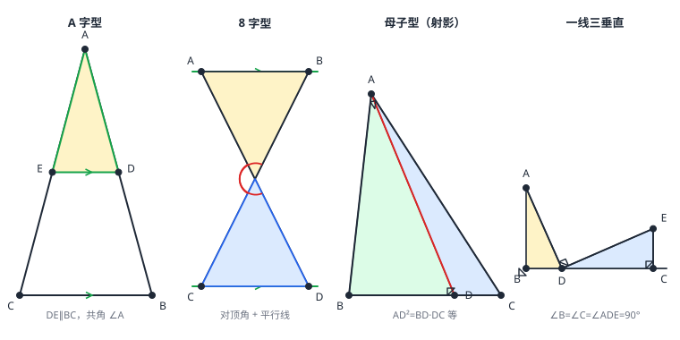

相似三角形的基本模型
相似题的图形翻来覆去就几副面孔：A 字型（平行截两边）、8 字型（两平行线被交叉直线截）、母子型（共角斜边配垂直高，即射影定理）、一线三等角型（与全等的一线三等角同款，条件从「相等」换成「成比例」）。识别模型 → 写出对应关系 → 套 AA，是相似实战的三步节奏。树影测高、小孔成像、网格缩放，全靠这几副面孔撑场。
| 所属主题 | 相似与投影 |
|---|---|
| 所属模块 | 几何 |
| 课标学段 | 第四学段（7~9 年级） |
| 前置知识 | 相似三角形的判定与性质、全等三角形的基本模型 |
| 核心素养 | 推理能力几何直观运算能力 |
教材定位
人民教育出版社《人教版（2024版）义务教育教科书·数学》
九年级下册第31章 相似31.3 相似三角形的应用
对应九下 31.3 相似三角形的应用中的典型图形结构：A 字型、8 字型、母子型与射影定理。
说明
A 字型：DE\parallel BC 截 \triangle ABC 两边，\triangle ADE\sim\triangle ABC（公共角 \angle A 加同位角相等，AA）。形状像字母 A——顶角公共，平行线当横杠。全等模型里的「平移型」是它 k=1 的版本。
8 字型：两条平行线被一对交叉直线所截，交叉点连出「两个对顶的三角形」相似（对顶角相等加平行线角，AA）。形状像数字 8——上圈下圈对顶。对应关系是交叉的：上圈的左顶点对应下圈的右顶点（两点在同一条截线两端），照「同名位置」直觉写对应式必错。
母子型（射影定理）：Rt\triangle ABC 斜边 BC 上的高 AD 把它拆成两个小直角三角形，三个直角三角形两两相似（公共锐角加直角）。由此得射影定理：AD^2=BD\cdot DC、AB^2=BD\cdot BC、AC^2=DC\cdot BC——「高的平方 = 两段斜边的乘积」。「母子」指原三角形与它拆出的小三角形共一个锐角。
一线三等角型：B、D、C 排在同一直线上，A、E 在线外，\angle B=\angle C=\angle ADE——两个小三角形相似（等角配平角推出第三对角相等，AA），全等模型的一线三等角（全等三角形的基本模型）换成等角值不同或边成比例就是这里。\angle B=\angle C=\angle ADE=90^\circ 时特称「一线三垂直」，是网格与坐标系题的常客。
使用场景
树影测高：同一时刻阳光平行照射，竖直标杆与树、各自的影子构成 A 字型（光线当平行横杠）——标杆高:标杆影长 = 树高:树影长，量影子即可算不着的树顶。
小孔成像：物、孔、像在一条直线上，过物两端与小孔的光线交叉成 8 字型（对顶于孔）——像高:物高 = 像距:物距，暗箱深度定放大倍率。
注意点
先画「模型框」再写对应：8 字型的对应点在各自截线的另一端（不是左右同侧）、母子型里三个三角形「谁与谁共角」各不相同——凭感觉写对应式，十个错九个。
母子型的射影定理只对「直角三角形 + 斜边上的高」成立：斜边换任意边、或高不是斜边上的高，AD^2=BD\cdot DC 立刻不成立。
一线三等角要求三个角「同值」，且中间的 \angle ADE 与两端点角 \angle B、\angle C 同侧张开：若 \angle ADE 取成它们的补角，平角推导出的第三对角就不再相等，AA 不成立，套模型会直接错。
证明

图 1：相似四大基本模型——A 字型（平行截两边）、8 字型（交叉连线夹平行线）、母子型（斜边上的高拆出三连相似，射影定理）、一线三等角（三个等角锁死两两相似）
证明
结论 1A 字型：DE\parallel BC 时 \triangle ADE\sim\triangle ABC，比例式即平行线分线段成比例。
\angle A 公共；\angle ADE=\angle B（DE\parallel BC 同位角，相交线与平行线）。AA 得 \triangle ADE\sim\triangle ABC，比例式即 平行线分线段成比例 的比例转移。
关键一步依据是 AA 加平行线同位角（相交线与平行线）：\angle A 是公共角，\angle ADE=\angle B 由 DE\parallel BC 的同位角相等得到，两角对应相等即相似；写出的比例式与 平行线分线段成比例 的比例转移是同一个式子，说明 A 字型不是新结论，而是比例定理的一种外形。
结论 28 字型：\triangle ABP\sim\triangle DCP，比例式 \tfracAPDP=\tfracBPCP=\tfracABDC。
两条交叉直线相交于 P，AD 与 BC 各是一条截线，AB\parallel CD。\angle APB=\angle CPD（对顶角，相交线与平行线）；\angle PAB=\angle PDC（内错角，截线 AD 截平行线 AB、CD）。AA 得 \triangle ABP\sim\triangle DCP，比例式 \tfracAPDP=\tfracBPCP=\tfracABDC——配对规律：站在同一条截线两端的两个顶点互为对应。
关键一步依据是两组角分别由平行线性质给出：\angle APB=\angle CPD 是对顶角（相交线与平行线），\angle PAB=\angle PDC 是截线 AD 截平行线 AB、CD 所得的内错角，AA 判定成立。对应顶点要按「站在同一条截线两端的两个顶点互为对应」来排：A、D 同在截线 AD 上、B、C 同在截线 BC 上，所以相似写作 \triangle ABP\sim\triangle DCP，比例式才不会写反。
结论 3母子型：直角三角形斜边上的高把图形分成两个与原三角形相似的小三角形，\triangle ABD\sim\triangle CBA\sim\triangle CAD，由此 AB^2=BD\cdot BC、AD^2=BD\cdot DC、AC^2=DC\cdot BC。
Rt\triangle ABC（\angle BAC=90^\circ），AD\perp BC 于 D。\angle ADB=\angle BAC=90^\circ 且 \angle B 公共，得 \triangle ABD\sim\triangle CBA；同理 \angle ADC=\angle BAC=90^\circ 且 \angle C 公共，得 \triangle CAD\sim\triangle CBA，于是 \triangle ABD\sim\triangle CBA\sim\triangle CAD（两两相似）。对应边写成比例：\triangle ABD\sim\triangle CBA 给 \tfracABCB=\tfracBDBA，交叉相乘即 AB^2=BD\cdot BC；再由 \triangle ABD\sim\triangle CAD 得 \tfracBDAD=\tfracADCD，即 AD^2=BD\cdot DC；由 \triangle CAD\sim\triangle CBA 得 AC^2=DC\cdot BC。
关键一步依据是 AA 判定反复使用：\angle ADB=\angle BAC=90^\circ 且 \angle B 公共，所以 \triangle ABD\sim\triangle CBA；\angle ADC=\angle BAC=90^\circ 且 \angle C 公共，所以 \triangle CAD\sim\triangle CBA，两两相似。比例式要按相似书写顺序取对应边：\triangle ABD\sim\triangle CBA 给出 AB≤ftrightarrow CB、BD≤ftrightarrow BA，交叉相乘即 AB^2=BD\cdot BC；\triangle ABD\sim\triangle CAD 给出 BD≤ftrightarrow AD、AD≤ftrightarrow CD，得 AD^2=BD\cdot DC；\triangle CAD\sim\triangle CBA 给出 CA≤ftrightarrow CB、CD≤ftrightarrow CA，得 AC^2=DC\cdot BC。
结论 4一线三等角：\angle B=\angle C=\angle ADE=\alpha 时 \triangle ABD\sim\triangle DCE，对应边 AB≤ftrightarrow DC、BD≤ftrightarrow CE、AD≤ftrightarrow DE。
\angle B=\angle C=\angle ADE=\alpha，B、D、C 在同一直线上（D 在中间），A、E 在直线同侧。在 D 处用平角：\angle ADB=180^\circ-\angle ADC，而 \angle ADC=\angle ADE+\angle EDC=\alpha+\angle EDC，故 \angle ADB=180^\circ-\alpha-\angle EDC。再看 \triangle DEC 的内角和：\angle DEC=180^\circ-\angle C-\angle EDC=180^\circ-\alpha-\angle EDC。两个右边完全相同，故 \angle ADB=\angle DEC；配上 \angle B=\angle C=\alpha，AA 得 \triangle ABD\sim\triangle DCE（对应边 AB≤ftrightarrow DC、BD≤ftrightarrow CE、AD≤ftrightarrow DE）。
关键一步依据是「同一直线上的邻补角」与三角形内角和：在 D 处 \angle ADB=180^\circ-\angle ADC，而 \angle ADC=\angle ADE+\angle EDC=\alpha+\angle EDC，故 \angle ADB=180^\circ-\alpha-\angle EDC；在 \triangle DEC 中 \angle DEC=180^\circ-\angle C-\angle EDC=180^\circ-\alpha-\angle EDC，两个右边相同，故 \angle ADB=\angle DEC。再配 \angle B=\angle C=\alpha，AA 成立——两个已知等角把「B、D、C 一条直线」换成了两个可配对的角。
动手实验
阳光正好的时候，把 1 米长的竹竿竖直插在平地上，量它的影长；再量旁边一棵树的影长。竿高:竿影 = 树高:树影——用计算器算出树高，再与目测估计对比（目测通常差得离谱，这就是相似模型的价值）。晚上拿带小孔的纸筒对着发光的小三角形（手机屏幕画一个）看墙上成的像：像与物形状相同、大小随墙距变大——8 字型的两条交叉光线就在暗箱里。
解题思路
识模三问：有没有平行线（A 字型 / 8 字型）？有没有直角三角形加斜边上的高（母子型）？有没有三个相等的角排在一条线上（一线三等角）？——三问定位模型。
对应关系「按角走」：写相似式之前先用角标定对应（公共角、对顶角、互余角），字母顺序照对应写，比例式不会错位。
射影定理三连用：直角三角形斜边上的高的图，AD^2=BD\cdot DC 求高、AB^2=BD\cdot BC 求边、AC^2=DC\cdot BC 求另一边——「高的平方 = 分段乘积」是这张图的万能钥匙（例 2）。
按场景的例题
例 1（场景：测量与工程） 树影测高
同一时刻，竖直竹竿长 1.6 米、影长 2 米；旁边一棵树的影长 15 米。求树高。为什么必须「同一时刻」测两个影子？
解：太阳光近似平行，竿、树与各自影子构成两个 A 字型相似三角形：\tfrac竿高竿影=\tfrac树高树影，即 \tfrac1.62=\tfrach15，2h=24，h=12 米。同一时刻保证光线方向一致——平行是 A 字型成立的前提；不同时刻光倾角变了，两组三角形的对应角不再相等。
答：树高 12 米；同一时刻测是为了保证光线平行、模型成立。
例 2（场景：图形设计） 直角支架斜杆分点
Rt\triangle ABC 中 \angle BAC=90^\circ，AD 是斜边 BC 上的高，BD=2、DC=8。求 AD、AB、AC 的长，并用勾股定理校核。
解：射影定理：AD^2=BD\cdot DC=2× 8=16，AD=4。AB^2=BD\cdot BC=2× 10=20，AB=2\sqrt5。AC^2=DC\cdot BC=8× 10=80，AC=4\sqrt5。勾股校核：AB^2+AC^2=20+80=100=BC^2=10^2 ✓；再验 AD 是高：\tfrac12 AB\cdot AC=\tfrac12× 2\sqrt5× 4\sqrt5=20=\tfrac12 BC\cdot AD=\tfrac12× 10× 4=20 ✓。
答：AD=4、AB=2\sqrt5\approx 4.47、AC=4\sqrt5\approx 8.94（BC=10）。
例 3（场景：生活优化） 雨棚交叉斜撑定位
水平横梁 BC 长 10 分米，B 端竖柱 AB=2 分米、C 端竖柱 CE=4.5 分米（两柱都垂直于横梁，即 \angle B=\angle C=90^\circ）。从横梁上一点 D 分别拉斜撑连到柱顶 A 与柱顶 E，两根斜撑恰好互相垂直（AD\perp DE，即 \angle ADE=90^\circ，一线三垂直）。求 BD 与 DC 的长。
解：\angle B=\angle C=\angle ADE=90^\circ（一线三垂直），由 why 第 4 步的推导 \triangle ABD\sim\triangle DCE：\angle ADB=\angle DEC、\angle ABD=\angle DCE=90^\circ，AA 成立。对应边 AB≤ftrightarrow DC、BD≤ftrightarrow CE，故 \tfracABDC=\tfracBDCE，交叉相乘得 BD\cdot DC=AB\cdot CE=2× 4.5=9。又 BD+DC=10，设 BD=x：x(10-x)=9，x^2-10x+9=0，x=1 或 9。
答：BD=1、DC=9 分米，或对称互换 BD=9、DC=1 分米（D 靠近哪端取决于斜撑设计）。
常用推论
四副面孔与全等模型一一同构：A 字型↔平移型、8 字型↔对顶型、一线三等角↔一线三等角（全等版）、母子型没有全等对应（k=1 时拆出的三角形不可能与原三角形全等）——全等是相似在 k=1 处的截面。
射影定理可反推勾股：AB^2+AC^2=BD\cdot BC+DC\cdot BC=(BD+DC)\cdot BC=BC^2——勾股定理（直角三角形与勾股定理）的又一条证明路线，且和拼图证明互不依赖。
「母子型」里 \triangle ABD\sim\triangle CBA\sim\triangle CAD 三连相似是这张图的完整描述：任何「求高、求分点、求斜边段」的问题都在这六个比值间倒腾。
易错点
错看见直角三角形就套射影定理 AD^2=BD\cdot DC。
为什么错射影定理要求 AD 是「斜边上的高」——若 AD 是直角边、或垂足落在斜边延长线上，三条公式全部失效。
正确先确认高从直角顶点作向斜边、垂足在斜边上，再套。
错8 字型写对应式时，上圈左顶点对下圈左顶点。
为什么错对顶角在交叉点配对——上左对下右、上右对下左；按「同名位置」直觉写对应，比例式整体错位。
正确由对顶角连线确定对应枢纽，再沿平行线方向配对顶点。
错树影测高时，上午量竿影、下午量树影，再代入比例式。
为什么错两个时刻光线的倾角不同，竿与树构不成同一组平行光线，两个「A 字型」的对应角不相等。
正确同一时刻量两个影子，保证光线平行。
直观理解
相似模型像积木的「标准件」：复杂图形千变万化，拆开看都是 A、8、母子、一线三等角这几副骨架（图 1 并排对照）。认骨架的钥匙是角——公共角是 A 字型的顶、对顶角是 8 字型的腰、互余角是母子型的关节、等角排成串是一线三等角的脊梁。找到角，骨架自动浮出；骨架浮出，对应关系就写在脸上了。全等与相似共用骨架，只差「等」与「比」一个字——学会看骨架，两套题一起通。